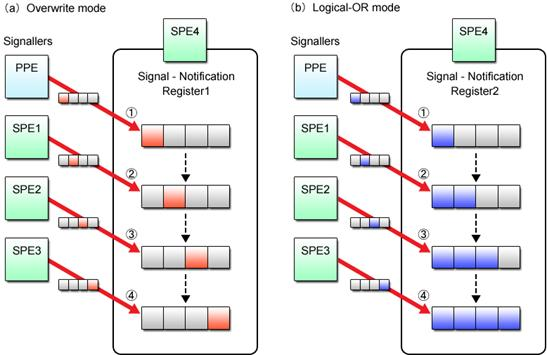
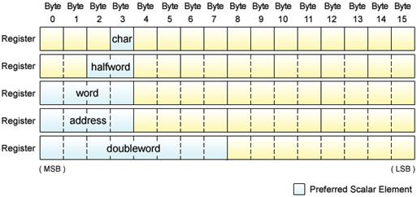

Now that the basics of the Cell programming have been studied in the previous chapters, let’s proceed further to learn about advanced functions of the Cell as well as useful tips on the Cell programming techniques.
Table 4.1: Structure of Chapter 4
|
Section |
Title |
Description |
|
Section 4.1 |
Communication between PPE and SPE |
Describes the many communication functions the SPE offers such as mailboxes, signal notification registers, and stop and signal interrupts. |
|
Section 4.2 |
Effective Utilization of DMA Transfer |
Provides in-depth information about DMA transfer, including precautions about the data to be transferred, and further additional DMA transfer commands offered by the MFC. |
|
Section 4.3 |
Representation of Data Shared between PPE and SPE |
Explicates the precautions about sharing data between the PPE and SPE programs that use different data models. |
|
Section 4.4 |
Vector Data Alignment |
Explicates the precautions about the alignment of vector data. |
|
Section 4.5 |
Scalar Operations on SPE |
Explains the characteristics of the preferred slot, with focusing on the efficiency of scalar operations by the SPE. |
|
Section 4.6 |
Embedded SPE Program |
Focuses on the method of embedding SPE program images in an ELF executable file of the PPE program. |
As described in Chapter 3, the Cell-unique SPE makes use of the MFC to transfer data between itself and another SPE or the PPE. The MFC incorporates a DMA controller to allow DMA transfer delineated in Section 3.3.
Now then, let’s take a look into some other means of communication offered by the MFC to support the transactions between an SPE and its external world (other SPEs and the PPE). Typical among them are the mailboxes and signal notification registers. The Stop and Signal instruction of the SPE is also explained.
While DMA transfer allows transfer of up to 16K bytes of data between the main memory and each SPE’s LS, mailboxes are designed for transfer of 32-bit data between the PPE and the SPE.
To put it another way, mailboxes are fit for transferring small data such as status information and parameters. Structurally, mailboxes are FIFO* queues (serieses of buffers for storing data). The MFC provides three types of mailbox queues, each with a different behavior and data transfer direction as shown in Fig. 4.1.
* FIFO: An acronym for First In, First Out. This expression describes the data access principle of a queue, where what comes in first is handled first.
Fig. 4.1: Mailboxes
(1) SPU Inbound Mailbox
Used to send data from the PPE to the SPE. This mailbox has space for storing up to four 32-bit messages at a time. If no message is found when the SPE program accessed the queue, the SPE stalls until data is written by the PPE program.
(2) SPU Outbound Mailbox
Used to pass data from the SPE to the PPE. This mailbox has the capacity to accept only one 32-bit message. If the SPU outbound mailbox is full, writing of the next data is suspended until the PPE reads the data from the queue.
(3) SPU Outbound Interrupt Mailbox
Like the SPU outbound mailbox, this is used to send data from the SPE to the PPE. When this mailbox is written, however, an interrupt event is generated to notify the PPE when to read the data.
These mailboxes can be accessed either from the SPE or PPE programs. The SPE program uses a channel interface to access the mailboxes. The PPE program does this via mailbox API functions offered by libspe2. Refer to the following documents for more details.
(1) Mailbox access from the SPE program
Section 19.6: Mailboxes of the Cell Broadband Engine Programming Handbook.
(2) Mailbox access from the PPE program
Chapter 7: SPE Mail Box Functions of the SPE Runtime Management Library Version 2.1.
SPU signal notification registers (hereinafter abbreviated as SNRs) are 32-bit registers used to send signals, such as control messages and events, to an SPE from other SPEs or the PPE. There are two SNRs for each SPE.
The sending processor (either PPE or SPE) writes the signal value in the form of 32-bit data into the SNR of the receiving processor (one of other SPEs). When the value is read by the receiving processor, all bits in the SNR are reset to zero. If the SNR is empty when it is read, the receiving processor stops execution until the signal is written.
Each bit of the 32-bit signal data can be assigned to the program's own specific meaning. By doing so, the signal can notify the SPE of anything from the change of status to the completion of processing. The SNRs can also be configured for overwrite mode or logical OR mode. The overwrite mode is useful in a one-to-one signaling environment, whereas the logical OR mode enables many-to-one signaling. Either of these modes can be selected for each SNR, independently of the other.
Fig. 4.2 shows the difference between the SNR’s two operating modes.

Fig. 4.2: SPU Signal Notification Modes
SNRs are similar to the SPU inbound mailbox. A major difference between the two is that SNRs can be used not only for data transfer between the PPE and SPE but also for that between SPEs, whereas the mailbox is limited to use between the PPE and SPE only. Capitalizing on the logical OR mode that allows many-to-one data transfer, the SNRs also make barrier synchronization of multiple SPE programs possible.
The signal transmission method to the SNRs differs between the PPE program and the SPE program. The PPE program sends the signal through a signal API provided by libspe2. The SPE program uses a dedicated DMA transfer command (SNDSIG) to send the signal to the destination SNR’s effective address mapped on the effective address space. The SNR’s effective address can be obtained through the API furnished by libspe2 to allow direct SPE access. As soon as the signal is written in the SNR, it becomes possible for the receiving SPE to read it out through the channel interface. For further information, refer to the following documents.
(1) Signal transmission from the PPE program
Descriptions about the SPE SPU signal notification functions in Chapter 7: SPE MFC Problem State Facilities of the SPE Runtime Management Library Version 2.1.
(2) Signal transmission from the SPE program
Section 19.7: Signal Notification of the Cell Broadband Engine Programming Handbook.
(3) Signal reception by the SPE program
Section 19.7: Signal Notification of the Cell Broadband Engine Programming Handbook.
(4) Access to the SNR’s effective address
Chapter 8: Direct SPE Access for Applications of the SPE Runtime Management Library Version 2.1.
The Stop and Signal instruction temporarily halts or terminates the SPE program being executed and the execution flow returns to the PPE program. Once this instruction is executed by the SPE, an interrupt called the stop and signal instruction trap is notified to the PPE, causing it to handle the request in accordance with the received interrupt signal.
The Stop and Signal instruction is used to enable a variety of processes – to return from the SPE program’s main () function and to implement the exit () function to name a few. The thing is, programmers are often unaware this instruction is in use. The following are some of typical examples that make use of the Stop and Signal instruction.
(1) exit() function of the SPE program
(2) printf() function and others used to call PPE library calls (C99, POSIX.1) from the SPE program
(3) Breakpoints in the SPE program debugger (spu-gdb, etc.)
In addition to the above system-defined usage, the Stop and Signal instruction can of course be used by the programmer to cause the PPE program to perform processing instead of the SPE program. For more details, refer to Chapter 6: SPE Event Handling of the SPE Runtime Management Library Version 2.1, together with the C/C++ Language Extensions for Cell Broadband Engine Architecture.
When notifying interrupts using the Stop and Signal instruction, the SPE delivers 14-bit signal type information to the PPE. With Linux, signal types are defined as follows.
(1) When the most significant bit is “0” (0x0000 – 0x1fff): Usable by applications
(2) When the most significant bit is “1” (0x2000 – 0x3fff): Reserved by the system
Signal types in the range from 0x0001 to 0x1fff except 0x0000 are available for use by the user in programming processes linked to the PPE program. A list of Linux-reserved signal types is shown in Table 4.2.
Table 4.2: Linux-Reserved Signal Types
|
Signal Type |
Description |
|
0x0000 |
Data has been executed as an instruction. |
|
0x2000〜0x20ff |
Return value from the main() or exit() function of Linux 0x2000: EXIT_SUCCESS 0x2001: EXIT_FAILURE |
|
0x2100〜0x21ff |
PPE callback handler running on Linux 0x2100: ISO/IEC C Standard 9899:1999 (C99) 0x2101: POSIX.1 (IEEE Standard 1003.1) 0x2102: POSIX.4 0x2103: OS-dependent system call |
|
0x3ffe |
Detection of stack overflow |
|
0x3fff |
Breakpoint for debugger |
The MFC provides a variety of communication mechanisms in addition to those described above. If you want to learn more about them, refer to Chapter 7: MFC Command of the Cell Broadband Engine Architecture and Chapter 4: Programming Support for MFC Input and Output of the C/C++ Language Extensions for Cell Broadband Engine Architecture.
Refer to Chapter 7: SPE MFC Problem State Facilities of the SPE Runtime Management Library Version 2.1 for more information about how to use libspe2 to make it possible to use MFC functions from the PPE program.
The Stop and Signal instruction is described in more detail in Section 2.11: Control Intrinsics and Section 9.8: SPU and MFC Interrupts Routed to the PPE of the C/C++ Language Extensions for Cell Broadband Engine Architecture.
This section complements Section 3.3 presented as an introduction to DMA transfer. We will now take a closer look into the precautions we have to bear in mind when programming DMA transfer for the Cell and learn about the techniques for getting the most from this data transfer system.
For ease of explanation, we have so far talked about DMA transfer of data that is a multiple of 16 bytes. However, the Cell can also handle DMA transfer smaller than this data size. Any data that meets the following size and alignment requirements is pursuant to the Cell’s DMA transfer constraints.
(1) DMA Transfer Size
The data size must basically be specified in a multiple of 16 bytes (16, 32, 48 , etc.). For DMA transfer of data smaller than 16 bytes, the Cell also supports data size of 1, 2, 4 or 8 bytes. The maximum data size that can be transferred at one time is 16K bytes.
(2) Address Alignment in DMA Transfer of More than or Equal to 16 Bytes
When the data to be transferred is greater than or equal to 16 bytes, the addresses on both sending and receiving sides (i.e., effective address and LS address) must be aligned on 16-byte boundaries. The execution performance of DMA transfer is maximized when the addresses of the data area on both sides begin on a 128-byte boundary.
(3) Address Alignment in DMA Transfer of Less than 16 Bytes
When the data to be transferred is smaller than 16 bytes, the addresses of the data area on both sending and receiving sides must satisfy the following conditions.
① Address alignment is consistent with the transfer size, i.e., addresses are aligned on the byte boundary equal to the transfer size.
② The lower 4 bits (indicating the relative position from the 16-byte boundary) of the effective address and the LS address are the same.
Taking DMA transfer of 4-byte data as an example, Fig. 4.3 graphically illustrates these requirements. To review again, the effective address and the LS address must not only be aligned on 4-byte boundaries but also begin at the same relative position from the 16-byte boundary.
Fig. 4.3: DMA Transfer (16 Bytes or Less)
Because it is necessary to follow detailed rules, DMA transfer of less than 16 bytes of data is not very convenient to use, nor can it be very efficient. Do not use this data size except for special purposes such as signal notification.
Unless the above-mentioned rules are observed, the MFC will stop, resulting in a DMA alignment error interrupt, which may cause abnormal termination of both the PPE and SPE programs.
For most applications, DMA transfer accounts for a large percentage of the time required for processing by the SPE program, which is to say, improving efficiency of DMA transfer is a significant means of making applications run faster. In this section, therefore, we will introduce “double buffering”, a technique for improving the efficiency of DMA transfer, while maximizing SPE performance.
Let’s start by quickly reviewing the efficiency of the DMA transfer explained in Section 3.3. With the basic programs explained there, DMA transfer is performed in the following sequence.
(1) Initiates DMA transfer (GET) to the input buffer.
(2) Waits for Step (1) to complete.
(3) Processes data and stores the calculated result in the output buffer.
(4) Initiates DMA transfer (PUT) from the output buffer.
(5) Waits for Step (4) to complete.
(6) Repeats Steps (1) through (5).
This sequence can be described as shown in Fig. 4.4 (a) in terms of time series from the viewpoint of input/output buffer operations. It can also be diagrammed as shown in Fig. 4.4 (b) when viewed from the relationship between MFC and SPU operations.
Fig. 4.4: Basic Programs Involving DMA Transfer
What’s clear from Fig. 4.4 (b) is that the MFC does nothing while the SPU is executing its computational task, or the SPU simply stalls until the DMA transfer by the MFC is complete, making it impossible to fully realize the SPU’s performance potentials.
That’s why a variety of techniques have been developed to achieve more efficient DMA transfer. Double buffering is one of such techniques.
The double buffering method uses two separate buffers in parallel for both input and output so that while one of them is used for computation, the other one can be filled or emptied by DMA transfer. In contrast to double buffering, the previously explained DMA transfer using only a single pair of input and output buffer is called single buffering.
Fig. 4.5 (a) illustrates the time series processing flow of double buffered DMA transfer. Fig. 4.5 (b) shows this processing flow reconfigured to highlight the concurrency between the MFC process and SPU process.
Fig. 4.5: DMA Double Buffering Method
As can be seen from Fig. 4.5 (b), the MFC performs DMA transfers in parallel with the SPU’s calculations, and the SPU does not spend a time just to wait for the completion of the transfers. Double buffering greatly improves the SPE’s computational capability by enabling DMA transfers in parallel with calculations.
In the case of the simple DMA transfer scenario described in Section 3.3, parallel execution of DMA transfers and SPU computations is impossible because every time a DMA transfer command is issued, it is necessary to verify the completion of transfer prior to proceeding to the next process. This, however, can be enabled by making use of the following DMA-related facilities.
(1) The SPU is inherently capable of performing its task, simultaneous with and independent of the DMA transfer placed under the control of the MFC. To take advantage of this, separated functions are provided to issue the DMA transfer command and to wait for the completion of its execution.
(2) Multiple DMA transfer commands, each identified by its own tag ID, can be issued at one time, while the completion of their executions can be individually waited for.
DMA double buffering basically proceeds as follows.
(1) Initiates DMA transfer (GET) to the input buffer 0.
(2) Initiates DMA transfer (GET) to the input buffer 1.
(3) Waits for the completion of DMA transfer (GET) to the input buffer 0.
(4) Waits for the completion of DMA transfer (PUT) from the output buffer 0..
(5) Performs necessary computations using the data in the input buffer 0 and the output buffer 0.
(6) Initiates DMA transfer (PUT) from the output buffer 0.
(7) Initiates the next DMA transfer (GET) to the input buffer 0.
(8) Switches between the input/output buffers 0 and 1.
(9) Iterates Steps (3) to (8) until all input data is processed.
(10) Waits for the completion of the last DMA transfer (PUT) from the output buffer 0 and 1.
Fig. 4.6 provides a graphic representation of these procedures.
Fig. 4.6: DMA Double Buffering Procedure
Double buffering is grounded in two basic principles. First, the DMA transfer command is issued as soon as input/output buffers become ready. Second, completion of DMA transfer is not verified until the moment the input/output buffers are used for calculations.
At the onset of double buffering procedures, input data is DMA transferred in succession to input buffers 0 and 1 (Steps (1) and (2)) because they are both empty. Immediately after one of the input buffers is filled with data and the corresponding output buffer are emptied (Steps (3) and (4)), calculations on the data in the input buffer is executed and the result is stored to the output buffer (Step (5)) and the result is DMA transferred (PUT) from the output buffer (Step (6)), simultaneously with the DMA transfer (GET) of the next input data to the emptied input buffer (Step (7)). These procedures are repeated (Step (9)), while switching between input/output buffers implemented in parallel (Step (8)), until processing of all data is complete, and last of all, waiting for the completion of the DMA transfer (PUT) command issued in Step (6) (Step (10)).
Here is an example of a specific program that allows double buffering in accordance with the procedures stated above. See List (4-1) that shows a part of the source code you need to write to copy data from one area of main memory to another area by making use of the double buffering method.
List (4-1): Sample code for double buffering (partial excerpt)
|
1 #define TOTALSIZE (1 << 24) 2 #define BUFSIZE (1 << 14) 3 4 char ibuf[2][BUFSIZE] __attribute__((aligned(128))); 5 char obuf[2][BUFSIZE] __attribute__((aligned(128))); 6 7 unsigned long long ea_in, ea_out; 8 unsigned int itag[2] = { 0, 1 }; 9 unsigned int otag[2] = { 2, 3 }; 10 11 void double_buffer(void) 12 { 13 int i; 14 int cur; 15 16 cur = 0; 1７ 18 initiate_dma_get_input(ibuf[0], itag[0]); /* Step 1 */ 19 20 initiate_dma_get_input(ibuf[1], itag[1]); /* Step 2 */ 21 22 for (i = 0; i < TOTALSIZE/BUFSIZE-2; i++) { 23 wait_dma_completion((1 << itag[cur]) | (1 << otag[cur])); /* Step 3 and 4 */ 24 25 compute(ibuf[cur], obuf[cur]); /* Step 5 */ 26 27 initiate_dma_put_result(obuf[cur], otag[cur]); /* Step 6 */ 28 29 initiate_dma_get_input(ibuf[cur], itag[cur]); /* Step 7 */ 30 31 cur ^= 1; /* Step 8 */ 32 } 33 34 wait_dma_completion((1 << itag[cur]) | (1 << otag[cur])); /* Step 3 and 4 */ 35 36 compute(ibuf[cur], obuf[cur]); /* Step 5 */ 37 38 initiate_dma_put_result(obuf[cur], otag[cur]); /* Step 6 */ 39 40 cur ^= 1; /* Step 8 */ 41 42 wait_dma_completion((1 << itag[cur]) | (1 << otag[cur])); /* Step 3 and 4 */ 43 44 compute(ibuf[cur], obuf[cur]); /* Step 5 */ 45 46 initiate_dma_put_result(obuf[cur], otag[cur]); /* Step 6 */ 47 48 wait_dma_completion((1 << otag[0]) | (1 << otag[1])); /* Step 10 */ 49 } 50 51 void initiate_dma_get_input(char *buf, unsigned int tagid) 52 { 53 spu_mfcdma64(buf, mfc_ea2h(ea_in), mfc_ea2l(ea_in), BUFSIZE, tagid, MFC_GET_CMD); 54 ea_in += BUFSIZE; 55 } 56 57 void initiate_dma_put_result(char *buf, unsigned int tagid) 58 { 59 spu_mfcdma64(buf, mfc_ea2h(ea_out), mfc_ea2l(ea_out), BUFSIZE, tagid, MFC_PUT_CMD); 60 ea_out += BUFSIZE; 61 } 62 63 void wait_dma_completion(unsigned int mask) 64 { 65 spu_writech(MFC_WrTagMask, mask); 66 spu_mfcstat(MFC_TAG_UPDATE_ALL); 67 } 68 69 void compute(char *src, char *dst) 70 { 71 memcpy(dst, src, BUFSIZE); 72 }
|
|
Lines 1〜2 |
Used to define the size of the buffers for DMA transfer. TOTALSIZE refers to the main memory area size (16MB), while BUFSIZE refers to the LS buffer capacity (16KB). |
|
Lines 4〜9 |
Used to define the LS input/output buffers, effective address variables and DMA transfer tag IDs used for double buffering. |
|
Line 14 |
Used to define the variable cur that enables switching between the two pairs of input/output buffers used in double buffered DMA transfer. |
|
Line 16 |
Initializes the variable cur to “0” in accordance with the input/output buffers that are used at the start of the double buffered DMA transfer. |
|
Lines 18〜20 |
Used to issue the DMA transfer (GET) commands that cause the first DMA transfer to input buffers 0 and 1. |
|
Line 23 |
Used to wait for the completion of DMA transfers (GET/PUT) to the input buffer ibuf[cur] and the output buffer obuf[cur]. By specifying tag IDs simultaneously for the input and output buffers, it is possible to wait for the completion of both transfers at one go. Although no DMA transfer command for the output buffer issued at the first time of for loop, this will cause no problem since .tag IDs with no corresponding DMA transfer command are treated as complete. |
|
Line 25 |
Enables computation of the data in the input buffer ibuf[cur] and stores the obtained result in the output buffer obuf[cur]. |
|
Line 27 |
Issues the DMA transfer (PUT) command to the output buffer obuf[cur]. |
|
Line 29 |
Issues the DMA transfer (GET) command to the input buffer ibuf[cur] for next input data. |
|
Line 31 |
Allows switching between the two pairs of input/output buffers. The index of the input/output buffers is alternately set to “0” or “1” by exclusive-OR operation. |
|
Lines 34〜46 |
The last two iteration cycles are handled outside the for-loop as they do not require DMA transfers (GET). |
|
Line 48 |
Used to wait for the completion of the last DMA transfer (PUT) from the output buffer 0 and 1. |
Click here for the source code for double buffering.
For more information on double buffering, refer to Chapter 19: DMA Transfers and Inter-Processor Communication and Section 24.1: DMA Transfers of the Cell Broadband Engine Programming Handbook.
A special DMA transfer mechanism called MFC atomic update is used when exclusive read/write operations must be performed by the SPE programs sharing variables in the main memory.
For a better understanding of this mechanism, let’s get started with a program that allows an SPE to increment a shared variable on the main memory using normal DMA transfer. As shown in List (4-2), the value of the variable is DMA transferred (GET) to the SPE for increment operation and the incremented value is written back to the main memory by DMA transfer (PUT).
List (4-2): Increment program using normal DMA transfers
|
1 #include <spu_intrinsics.h> 2 #include <spu_mfcio.h> 3 4 int counter __attribute__((aligned(128))); 5 6 int main(unsigned long long spe, unsigned long long argp, unsigned long long envp) 7 { 8 int i; 9 10 for (i = 0; i < 10000; i++) { 11 spu_mfcdma64(&counter, mfc_ea2h(argp), mfc_ea2l(argp), sizeof(int), 0, MFC_GET_CMD); 12 spu_writech(MFC_WrTagMask, 1 << 0); 13 spu_mfcstat(MFC_TAG_UPDATE_ALL); 14 15 counter++; 16 17 spu_mfcdma64(&counter, mfc_ea2h(argp), mfc_ea2l(argp), sizeof(int), 0, MFC_PUT_CMD); 18 spu_writech(MFC_WrTagMask, 1 << 0); 19 spu_mfcstat(MFC_TAG_UPDATE_ALL); 20 } 21 22 return 0; 23 }
|
Click here for the source code for increment program using normal DMA transfers.
This program works as intended when it is used only by a single SPE. However, a problem arises if it is executed simultaneously by multiple SPEs.
Fig. 4.7 shows what would happen if the increment program in List (4-2) is executed by two SPEs.
Fig. 4.7: Invalid Increment Operation
In Fig. 4.7 (a), the shared variable is incremented properly as the operation of SPE2 is appropriately timed with that of SPE1. As shown in Fig. 4.7 (b), however, the variable value cannot be incremented in a way it should, if SPE2 accesses the variable before it is incremented by SPE1 and attempts to overwrite its value after it is incremented by SPE1.
Put simply, the use of normal DMA transfer is not fit for updating variables shared by multiple SPEs. Nevertheless, the problem of incoherent variable values described in Fig. 4.7 (b) can be avoided only if it is possible to start all over again from reading the variable value when an update is performed by some other SPE after accessing the variable for the first time. This is where the MFC atomic update facility proves its usefulness.
Fig. 4.8: MFC Atomic Update
The GETLLAR (Get Lock Line and Reserve) and PUTLLC (Put Lock Line Conditional) commands are used for DMA transfer to perform atomic accesses, instead of GET and PUT commands.
The GETLLAR command causes the data in the main memory to be brought into the LS, enabling the SPE to know thereafter whether the data’s rightful home area in the main memory is updated by some other SPE. The data accessed by the GETLLAR command and updated by the SPE is written back to the main memory by using the PUTLLC command. The PUTLLC command fails and the data is not written at all if its home area in the memory is updated by some other SPE. Upon detection of the failure of the PUTLLC command, the SPE retries by repeatedly issuing GETLLAR command and updating the data loaded until the PUTLLC command is expected successfully. In this way, atomic update operations by the MFC ensure infallible updates of shared variables.
List (4-3) shows an example source code for a program that makes use of the MFC atomic update commands for incrementing a shared variable.
List (4-3): Increment program utilizing MFC atomic update operations (partial excerpt)
|
1 #include <spu_intrinsics.h> 2 #include <spu_mfcio.h> 3 4 int counter[32] __attribute__((aligned(128))); 5 6 int main(unsigned long long spe, unsigned long long argp, unsigned long long envp) 7 { 8 int i; 9 10 for (i = 0; i < 10000; i++) { 11 do { 12 spu_mfcdma64(counter, mfc_ea2h(argp), mfc_ea2l(argp), 128, 0, MFC_GETLLAR_CMD); 13 spu_readch(MFC_RdAtomicStat); 14 15 counter[0]++; 16 17 spu_mfcdma64(counter, mfc_ea2h(argp), mfc_ea2l(argp), 128, 0, MFC_PUTLLC_CMD); 18 } while(spu_readch(MFC_RdAtomicStat) & MFC_PUTLLC_STATUS); 19 } 20 21 return 0; 22 }
|
|
Line 4 |
Defines the buffer size for DMA transfer. Note that the buffers used for MFC atomic updates must be able to deal with DMA transfer of 128-byte data that begins on the 128-byte boundary. |
|
Line 12 |
Issues the GETLLAR command to read the shared variable data in the main memory. |
|
Line 13 |
Whenever an MFC atomic update command is issued, it is necessary to read the value of the MFC_RdAtomicStat channel using the built-in spu_readch() function to wait for the completion of DMA transfer. |
|
Line 15 |
Increments the shared variable value. |
|
Line 17 |
Issues the PUTLLC command to write the incremented value to the shared variable in the main memory. Writing to the variable is prevented when it has been updated by some other SPE. |
|
Line 18 |
Checks whether the PUTLLC command is executed successfully by reading the value of the MFC_RdAtomicStat channel using the built-in spu_readch() function. In the case of failure, goes back to the line 12. |
Click here for the source code for increment program utilizing MFC atomic update operations.
As we have seen, the MFC atomic update sequence makes it possible to exclusively update variables shared by multiple SPEs. It also helps implement a variety of synchronization mechanisms such as semaphore and mutex. In addition, atomic updates can be used to update variables shared with the PPE that incorporates a similar facility.
Special care must be taken when using MFC atomic update commands because they differ from normal DMA transfer commands not only in transfer size but also in the procedure to wait for command completion as mentioned above. For more information, refer to Section 20.3: SPE Atomic Synchronization of the Cell Broadband Engine Programming Handbook.
This section explains the precautions on data sharing between the PPE and SPE. For the efficiency of programming, data types shared by multiple source codes are ordinarily defined in a common header file, so let’s start with the important points to remember when defining the data types shared between the PPE program and the SPE program.
In the C language, the same data type can be expressed in different ways as this programming language has no mandatory representation rules. The most commonly used data models are ILP32 and LP64.
(1) ILP32
Data size of the int type, long type and pointer type is 32 bits long.
(2) LP64 (I32LP64)
Data size of the int type is 32 bits long, while that of the long type and pointer type is 64 bits long.
ILP is an acronym for Integer, Long Integer and Pointer. The long long type is always 64 bits long irrespective of the data model used.
PPE programs can be classified into 32-bit programs based on ILP32 and 64-bit programs based on LP64. All SPE programs use ILP32. Table 4.3 provides a list of data types and their sizes used in PPE and SPE programs.
Table 4.3: Program Data Representations
|
Representation
Data Size |
PPE Program |
SPE Program (ILP32) |
|
|
32-bit Program (ILP32) |
64-bit Program (LP64) |
||
|
int Type |
32 bits |
32 bits |
32 bits |
|
long Type |
32 bits |
64 bits |
32 bits |
|
long long Type |
64 bits |
64 bits |
64 bits |
|
Pointer Type |
32 bits |
64 bits |
32 bits |
As highlighted in red, long type and pointer type LP64 PPE programs differ from SPE programs in terms of data size (64 bits as opposed to 32 bits). Also note that the pointer types logically indicate the different kinds of address – For PPE programs, it points to the effective address and for SPE programs, it points to the LS address, although this difference is not clear in the above table.
List (4-4) shows the DMA transfer parameter extracted from the sample program in Section 3.3, where the long long type 64-bit data is used to represent effective addresses. Using this as an example, let’s discuss the points to keep in mind when sharing data between PPE and SPE.
List (4-4): Data representation of shared DMA transfer parameter (unsigned long long type)
|
typedef struct { unsigned long long ea_in; /* Effective address of input data */ unsigned long long ea_out; /* Effective address of output data */ int size; int pad[3]; } abs_params_t;
|
Since ea_in and ea_out are both addresses, it may seem more reasonable to describe them, as shown in List (4-5), by means of pointer type data. In fact, the use of this data type is perfectly justifiable, on the condition that the same data representation, namely ILP32, is used for both PPE and SPE programs.
List (4-5): Fallacious data representation of shared DMA transfer parameter (pointer type)
|
typedef struct { int *ea_in; /* Effective address of input data */ int *ea_out; /* Effective address of output data */ int size; int pad; } abs_params_t;
|
Remember, however, the data size of the pointer type is 64 bits in LP64-based PPE programs, while it is always 32 bits in SPE programs. This means that data placement in the structure may differ between the two programs as shown in Table 4.4, which, in turn, may make it impossible to reference correct data and obtain a correct result.
Table 4.4: Data Structure
|
PPE Program |
SPE Program |
|
|
32-bit Program |
64-bit Program |
|
|
|
|
|
When long type or pointer type data is included in the data shared through DMA transfers and so on, be aware of the possibility that data cannot always be referenced exactly.
Moreover, the example described above is faulty in the first place, because the pointer, which should point to the LS address, is retaining the effective address. This is more critical than the discrepancy in the address data size. Even if an effective address of int data is received from the PPE program, the SPE program cannot access and handle data through the pointer, i.e., it always requires data to be DMA transferred to its LS. List (4-6) shows a bad example of source code that does not operate normally when used for the SPE program.
List (4-6): Erroneous effective address reference by the SPE program
|
volatile abs_params_t param __attribute__((aligned(16)));
for (i = 0; i < param.size; i++) { *(param.ea_out + i) = *(param.ea_in + i) + 10; }
|
As explained in the previous section, data size varies between the PPE and SPE programs, depending on the data type and representation. The long and pointer types, for example, often cause problems when used in the data to be shared by the PPE and SPE programs. The following describes the techniques for eliminating these problems. Using either one of them will assure you accurate programming independent of data representation.
(1) Avoid using long type and pointer type data.
Do not use long type and pointer type data whose size differs between the PPE and the SPE. Instead, explicitly use the int type for 32-bit integer data, the long long type for 64-bit integer data, and the unsigned long long type for the effective address. The effective address represented by the PPE’s pointer type can be converted into the unsigned long long type by performing pointer casting shown in List (4-7). In this list, casting is performed in two steps – first to the unsigned long type and then to the unsigned long long type – in order to prevent sign extension.
List (4-7): Effective address representation using the unsigned long long type
|
int *in, *out; abs_params.ea_in = (unsigned long long) (unsigned long) in; abs_params.ea_out = (unsigned long long) (unsigned long) out;
|
(2) Make effective use of data types whose size is explicitly defined.
Data types defined by stdint.h can be used as another way of eliminating problems associated with data representations. Data types defined by stdint.h, e.g. int32_t and int64_t, are suitable for use for shared data because their data length is explicitly defined. For the effective address, we recommend using the uint64_t type shown in List (4-8).
List (4-8): Explicit data type definition
|
typedef struct { uint64_t ea_in; uint64_t ea_out; uint32_t size; uint32_t pad[3]; } abs_params_t
|
As for the effective address, the following code causes casting to the uint64_t type from the PPE program’s pointer type. The uintptr_t type is an integer type of the same size as the pointer type.
List (4-9): Effective address representation using the data type defined by stdint.h
|
#include <stdint.h>
int *in, *out; abs_params.ea_in = (uint64_t) (uintptr_t) in; abs_params.ea_out = (uint64_t) (uintptr_t) out;
|
All in all, data representation conversion is vital for data sharing. By avoiding the use of data types such as long and pointer that are dependent on data representation, the PPE program, regardless of whether it is 32 bits or 64 bits, can correctly share data with the SPE program.
When compiling PPE programs, be sure to specify the -m32 option (for 32-bit programs) or the -m64 option (for 64-bit programs) as shown in the following examples.
Example (4-1): Compiling 32-bit PPE programs
|
$ gcc -m32 sample_ppe.c
|
Example (4-2): Compiling 64-bit PPE programs
|
$ gcc -m64 sample_ppe.c
|
When compiled without specifying the –m option, data size (32 or 64 bits) of the created PPE program depends on the compiler used. Even when compiled using the same gcc, moreover, it is not certain that exactly the same PPE program will be generated in every development environment. In order to create PPE programs that work correctly, it is important to be aware of the data size throughout the programming process.
This section describes the alignment of vector data from the pro-hardware point of view to complement the information provided in Section 2.2.
First, let us reconfirm what “load” and “store” exactly mean. Neither PPE nor SPE can directly use memory data for computations. Data in the memory is first copied into a register that allows high-speed access. Then calculations are performed on the data retained in the register.
Fig. 4.9: Load and Store
As shown in Fig. 4.9, “load” refers to the operation performed by the PPE or SPE whereby data is transferred from the memory to the register. Conversely, “store” means writing the register’s data back to the memory. These operations invariably impose size and alignment restrictions on the data to be transferred, and if these restrictions are not observed, it becomes impossible to load and store data, or to perform computations that yield expected results.
Designed to handle data in the form of vectors, the PPE and SPE incorporate multiple 16-byte registers, while load and store of vector data using these registers are restricted as follows.
(1) Data size
The size of data to be loaded or stored in one operation must be equal to the entire length (16 bytes) of a register. No data smaller than this size can be loaded and stored between the memory and the register.
(2) Alignment
The address of the data storage location used in load and store operations must be aligned on a 16-byte boundary.
Performing load and store operations without aligning the initial address of vector data to a 16-byte boundary will result in obtaining a value the programmer does not expect. Even after this happens, the PPE and SPE programs carry on processing normally in almost all environments, making it extremely difficult for the programmer to detect the error and its cause.
Fig. 4.10: Loading of Unaligned Vector Data
In the above Fig. 4.10, the initial address of the scalar array a is not aligned on the 16-byte boundary. This means that instead of all elements of the scalar array a, which the programmer intends to load to the register, only the first and second elements of the scalar array a are loaded, together with the extraneous values X and Y. What’s worse is that in the subsequent calculation of the variable va, the values X and Y are used instead of the third and fourth elements of the scalar array a.
The need to align each vector data appropriately on a boundary was explained in the previous section. Now let’s look at the method of allocating byte-aligned memory area. This is performed either statically or dynamically.
(1) Static memory allocation using the aligned attribute
Data can be aligned on the arbitrary boundary by assigning the aligned attribute when declaring a variable or when defining a type. This attribute is effective only for static allocation of global variables. It does not guarantee that variables allocated on a stack, such as the local variables declared within a function, can also be aligned.
List (4-10): Static allocation (16-byte alignment) using the aligned attribute
|
int a[4] __attribute__((aligned(16))) char b[16] __attribute__((aligned(16)))
|
(2) Dynamic memory allocation using the memalign() or posix_memalign() function
When the local variables within the program’s function or the memory area size to be allocated is indeterminate, dynamic reservation can be performed using either the memalign() or the posix_memalign() function. The arguments and return value of these functions are shown in API Definitions (4-1) and (4-2).
API Definition (4-1): Prototype declaration in the memalign() function
|
void *mamalign(size_t boundary, size_t size);
|
|
First argument |
boundary |
Specifies the boundary size for the memory area to be allocated. |
|
|
Second argument |
Size |
Specifies the size of the memory area to be allocated. |
|
|
Return value |
|
On success, returns the pointer to the allocated memory area. On failure, NULL is returned and an error code is set to errno. |
|
|
|
|
||
|
|
|
|
|
API Definition (4-2): Prototype declaration in the posix_memalign() function
|
int posix_mamalign(void **memptr, size_t alignment, size_t size);
|
|
First argument |
memptr |
Specifies the pointer to the pointer variable used to store the address of the allocated memory area. |
|
Second argument |
alignment |
Specifies the boundary size for the memory area to be allocated. |
|
Third argument |
Size |
Specifies the size of the memory area to be allocated. |
|
Return value |
|
On success, returns “0”. On failure, returns a value other than “0”. |
For the PPE program, use the posix_mamalign() function, as use of the memalign() function is not recommended. In contrast, the memalign() function is the only function that can be used with the SPE program; the posix_memalign() function is not available.
Examples (4-3) and (4-4) demonstrate how to use the memalign() and posix_memalign() functions.
Example (4-3): Dynamic reservation (16-byte alignment) using the memalign() function (SPE program)
|
#include <malloc.h>
char *buffer; buffer = (char *) memalign(16, 1024);
|
Example (4-4): Dynamic reservation (16-byte alignment) using the posix_memalign() function
(PPE program)
|
#define _XOPEN_SOURCE 600 #include <stdlib.h>
char *buffer; ret = posix_memalign(&buffer, 16, 1024);
|
The memory area available for the SPE program is only 256KB. From the standpoint of efficient use of this limited usable memory space, dynamic reservation of the memory area should basically be avoided. This is because fragmentation of the available free space occurs every time dynamic allocation is set and reset and this gradually makes it impossible to allocate a sufficiently large memory area at one time.
As you may now understand, vector data must be aligned on an appropriate boundary. If not aligned, load and store operations become quite complex, requiring a number of extra processes. Just for your reference, the following describes the procedure for loading and storing unaligned vector data for processing by the SPE program.
List (4-11) shows an example of a function used to load vector data that is not aligned on a 16-byte boundary. More specifically, the vector_load_unaligned() function loads the register with 16 bytes of data accessed from the any address specified by the first argument and returns the result of processing by the SPE program in the form of vector data.
List (4-11): Load function for unaligned vector data (for SPE program)
|
1 vector unsigned char vector_load_unaligned(vector unsigned char *ptr) 2 { 3 vector unsigned char qw0, qw1, qw; 4 int shift; 5 6 qw0 = *(ptr & ‾0xf); 7 qw1 = *((ptr+1) & ‾0xf); 8 shift = (unsigned int) ptr & 0xf; 9 qw = spu_or(spu_slqwbyte(qw0, shift), spu_rlmaskqwbyte(qw1, shift-16)); 10 11 return (qw); 12 }
|
|
Line 3 |
Declares the variables qw0, qw1 and qw necessary to be used to load vector data. |
|
Line 4 |
Declares the variable shift used to cause a byte shift in the vector data. |
|
Line 6 |
Loads the register with a 16-byte value including the left portion of the vector data. |
|
Line 7 |
Loads the register with a 16-byte value including the right portion of the vector data. |
|
Line 8 |
Assigns the offset from the 16-byte boundary to the variable shift. |
|
Line 9 |
Using the spu_slqwbyte() function, left-shifts the left portion of vector data for a distance equivalent to the offset value. Using the spu_rlmaskqwbyte() function, right-shifts the right portion of vector data for a distance equivalent to the offset value. Using the spu_or() function, merges the two shifted data. |
|
Line 11 |
Returns the appropriately loaded 16-byte value. |
The vector_store_unaligned() function shown in List (4-12) is an example of a function used to store vector data that is not aligned on a 16-byte boundary. More specifically, this function stores the 16 bytes of data specified by the first argument to the any address specified by the second argument.
List (4-12): Store function for unaligned vector data (for SPE program)
|
1 void vector_store_unaligned(vector unsigned char qw, vector unsigned char *ptr) 2 { 3 vector unsigned char qw0, qw1; 4 vector unsigned char mask = spu_splats((unsigned char) 0xff); 5 int shift; 6 7 qw0 = *(ptr & 0xf); 8 qw1 = *((ptr+1) & 0xf); 9 shift = (unsigned int) ptr & 0xf; 10 mask = spu_rlmaskqwbyte(mask, -shift); 11 qw = spu_rlqwbyte(qw, -shift); 12 *(ptr & 0xf) = spu_sel(qw0, qw, mask); 13 *((ptr+1) & 0xf) = spu_sel(qw1, qw, mask); 14 15 return; 16 }
|
|
Line 3 |
Declares the variables qw0 and qw1 necessary to be used to store vector data. |
|
Line 4 |
Declares the variable shift used to specify the mask value for merging vector data. |
|
Line 5 |
Declares the variable mask used to cause a byte shift in the vector data |
|
Line 7 |
Loads the 16-byte value of the storage location on the memory where the left portion of vector data is stored. |
|
Line 8 |
Loads the 16-byte value of the storage location on the memory where the right portion of vector data is stored. |
|
Line 9 |
Assigns the byte shift value for the storage location on the memory to the variable shift. |
|
Line 10 |
Using the spu_rlmaskqwbyte() function, assigns the mask value to the variable mask for merging the vector data with the storage area on the memory. |
|
Line 11 |
Using the spu_rlqwbyte() function, generates merged data to be stored by rotating the vector data to the right direction equivalent to the shift bytes. |
|
Line 12 |
Using the spu_sel() function, merges the left portion of the vector data with the storage area on the memory and writes it back to the original memory area. |
|
Line 13 |
Using the spu_sel() function, merges the right portion of the vector data with the storage area on the memory and writes it back to the original memory area. |
As can be seen from the above example, load and store operations for the memory area where data is not aligned cannot be performed without going through a multitude of processes. In SIMD programming, it is very important to ensure that data is aligned on an appropriate boundary.
The SPE is a processor optimized for SIMD operations, yet it can be adapted for scalar operations only if some precautions are taken. In this section, therefore, we will investigate into the efficiency of scalar operations by the SPE, while paying attention to some of basic do’s and don’ts.
Many of today’s architectures have separate registers for scalar data and vector data. On the other hand, the SPE offers no registers dedicated to scalar data and thus uses the same register for both types of data. The SPE also provides no load, store and arithmetic instructions designed specifically for scalar data. Scalar operations on this processor are performed by using SIMD instructions.
Scalar data does not need to use the entire register; it only uses a predetermined part of the register called the preferred scalar element. According to the scalar data type and size, the position of the preferred scalar element is determined as shown in Fig. 4.11.

Fig. 4.11: Preferred Scalar Element
In more detail, char type scalar data is located to Byte 3, short type to Bytes 2〜3, int type and float type to Bytes 0〜3, and long long type and double type to Bytes 0〜7. In addition to these data, the pointer type used to indicate the address is also assigned to Bytes 0〜3.
The SPE cannot calculate scalar data unless the position of each data in the register is aligned as in the example of summation in Fig. 4.12 (a). The sum cannot be calculated correctly when data positions are unaligned as shown in Fig. 4.12 (b).
Fig. 4.12: Scalar Operation using SIMD Instructions
Scalar data can be aligned at any position in the register if they were to be used for simple calculations only. Nonetheless, there are several reasons for determining and using the preferred scalar element.
One of the reasons resides in the design of the SPE’s instruction set, which postulates that scalar data, such as the address information in load and store instructions, is allocated to the preferred scalar element. This means that the address computed by the SPE can be passed directly to these instructions only if its data is stored in the preferred scalar element.
In this section, scalar operations by the PPE are compared with the same by the SPE as one way of evaluating the efficiency of using the SPE for scalar operations.
Like the majority of currently available architectures, the PPE incorporates separate registers for scalar data and vector data. It can also handle a variety of data sizes, from byte to word. As shown in
Fig. 4.13, therefore, the PPE can execute scalar operations through a few simple processes of load, calculate and store.
Fig. 4.13: Scalar Operations by PPE
Using SIMD instructions, the SPE can also perform scalar operations for the data allocated in the preferred scalar element. Scalar operations by this processor, however, cannot be done so simply as in the case of the PPE, because data must be loaded and stored in 16-byte units, beginning on a 16-byte boundary, as explained in Section 4.4.
The flow of scalar operation on SPE is shown in the following Fig.4.14.
Fig. 4.14: Scalar Operations by SPE
Scalar operations by the SPE are performed as follows.
Input data, 16 bytes inclusive of scalar data, is loaded to the register and shifted appropriately to the preferred scalar element. When storing the result in the memory, the 16-bytes data inclusive of the location to store is loaded, a part of the 16-bytes data is replaced with the calculated result, and then the whole 16-bytes data is stored, because it is impossible to store just one scalar data.
Compared to the PPE, it cannot be said that the SPE can handle scalar operations efficiently, particularly when data load and store operations are involved. In particular, special care must be taken when using codes, such as the ones listed below, that seriously affect the performance of the program by causing frequent load and store operations.
(1) Reference to an element in a scalar array
|
int a[16], b[16]; a[i] = b[i]++;
|
(2) Reference to scalar data through a pointer
|
int *a, *b; *(a + i) = *(b + i)++;
|
(3) Reference to a member variable in a structure
|
struct foo bar; b = bar.a + 1;
|
Performance of the SPE program can perfectly be maintained when load and store interactions with the memory are unnecessary to be performed. Calculation of the counter variable in the for statement, for example, will cause no problem as it is performed within the register.
As in the case of the solution program (2-1) described in Chapter 2, where the sum total of partial sums is calculated, it is often necessary to individually manipulate the elements of vector data. To enable such operations, the SPE provides five intrinsics that allow data conversion between scalar and vector. For efficient SPE programming, these intrinsics can be used according to need. Table 4.5 provides a list of intrinsics built into the SPU.
Table 4.5: List of SPU Intrinsics for Scalar Operations
|
Intrinsic |
Description |
|
d = spu_promote(a, element) |
The value of scalar a is promoted to a new vector containing a in the element that is specified by the element parameter, and the new vector is returned in vector d. |
|
spu_insert(a, b, element) |
The value of scalar a is inserted into the element of vector b that is specified by the element parameter. |
|
d = spu_extract(a, element) |
The value of the element that is specified by element is extracted from vector a and returned in scalar d. |
|
d = spu_splats(a) |
A new vector is generated by replicating the value of scalar a across all elements and returned in vector d. |
|
d = spu_gather(a) |
The lowest bit (LSB) of each element of vector a is gathered in the word element 0 of a new vector, and the new vector is returned in vector d.
|
For more information on the SPU intrinsics, refer to Section 2.13: Scalar Intrincis of the C/C++ Language Extensions for Cell Broadband Engine Architecture.
The PPE program executes the SPE program by reading the SPE program image from the SPE program’s ELF executable file. In this basic method of executing the SPE program, which we learned before in Section 3.2, the PPE program and the SPE program are compiled into separate ELF executable files.
As explained below, however, the SPE program can also be embedded in the ELF executable file for the PPE program.
Embedded SPE program refers to an SPE program image embedded as data in the PPE program. As shown in Fig. 4.15, the embedded SPE program can be produced by linking the particular formed PPE object, which contains the SPE program, to the PPE program. This special PPE object is called the CESOF (CBEA Embedded SPE Object Format) object. When embedded in the PPE program, the SPE program can be referenced from the PPE program as a handle (spe_program_handle_t data) to the SPE program image.
Fig. 4.15: CESOF Object and Embedded SPE Program
The CESOF object can be used when it is desirable to put together in a single file the program and library for the PPE program that utilize the SPE program. By doing so, the PPE program can dispense with the process of opening the SPE program’s ELF executable file. Use of the CESOF object also eliminates the problem of a lost executable file caused by an error in specifying the file path to the SPE program or deleting the file itself.
List (4-13) shows the embedded SPE program for displaying “Hello world!” The program is not different from the program used for the same purpose in Section 3.2.
List (4-13): Hello world program (SPE program)
|
#include <stdio.h>
int main(unsigned long long spe, unsigned long long argp, unsigned long long envp) { printf(“Hello world!¥n”);
return 0; }
|
As shown in List (4-14), the SPE program to be embedded in the PPE program is referenced from the PPE program as an external symbol of the spe_program_handle_t type.
List (4-14): Hello world program (PPE program)
|
1 #include <libspe2.h> 2 3 extern spe_program_handle_t prog; 4 5 int main(int argc, char **argv) 6 { 7 int ret; 8 spe_context_ptr_t spe; 9 unsigned int entry = SPE_DEFAULT_ENTRY; 10 spe_stop_info_t stop; 11 12 // No need to open/close SPE program image (spe_image_open() and spe_image_close()) 13 14 spe = spe_context_create(0, NULL); 15 /* ... snip ... */ 16 ret = spe_program_load(spe, &prog); 17 /* ... snip ... */ 18 ret = spe_context_run(spe, &entry, 0, NULL, NULL, &stop); 19 /* ... snip ... */ 20 ret = spe_context_destroy(spe); 21 22 return 0; 23 }
|
|
Line 3 |
Used to declare the handle for the SPE program image as an external variable. The name of this variable must be the same as the name of the external symbol for the SPE program image to be embedded in the CESOF object, which is generated by using the embedspu command explained later. |
|
Line 12 |
No need to call the spe_image_open() and the spe_image_close() functions, as the SPE program image is to be embedded in the PPE program. |
|
Line 16 |
Note that the pointer to the handle of the SPE program image must be specified in the second argument of the spe_program_load() function. |
Now then, let’s take a look at the procedure for creating a PPE program with an embedded SPE program.
(1) Creating SPE objects
(2) Creating SPE programs (linking the SPE objects)
(3) Creating CESOF objects
(4) Creating PPE objects
(5) Creating a PPE program
(linking the PPE objects and the CESOF objects)
These steps are diagramed in Fig. 4.16. Steps (1) and (2) are the same as the SPE programming we learned before.
Fig. 4.16: Execution Sequence
A special command called the embedspu command is used in Step (3) to generate the CESOF objects from the SPE programs. In Step (4), the PPE objects are generated from the source codes of the PPE program, and finally in Step (5), the PPE program is created by linking the CESOF objects and the PPE objects.
As for the hello world program taken as an example, Example (4-5) shows the simplest compiling method for embedding the SPE program into the PPE program.
Example (4-5): Program Compilation
|
$ spu-gcc –c hello_spe.c ・・・Step (1) $ spu-gcc hello_spe.o –o hello_spe.elf ・・・Step (2) $ embedspu -m64 prog hello_spe.elf hello_embedspe.o ・・・Step (3) $ gcc –m64 –c hello_ppe.o ・・・Step (4) $ gcc –m64 –lspe2 hello_ppe.o hello_embedspe.o –o hello_ppe.elf ・・・Step (5)
|
First of all, the ELF executable file for the SPE program is generated using the spu-gcc command (Steps (1) and (2)). Next, the CESOF object with the embedded SPE program is generated using either the embedspu command or the ppu-embedspu command (Step (3)).
The gcc command can be used to generate the PPE object from the PPE program source code (Step (4)). And finally, the ELF executable file for the PPE program is generated by linking the CESOF object and the PPE object.
The PPE program created in Step (5) is the only file required for program execution. The SPE program created in Step (2) is no longer necessary.
Example (4-6) shows the embedspu command used to generate the CESOF object. The name of the external symbol for the SPE program image, the name of the SPE program file to be embedded in the PPE program and the name of the CESOF object file to be generated are all specified to the arguments of this command.
Example (4-6): embedspu command
|
embedspu {-flags ...} [symbol_name] [input_filename] [output_filename]
|
When generating the CESOF object, the embedspu command can also be passed any compiler options, e.g. -m32 or -m64 depending on the data model.
Additionally, the CESOF object enables shared use of global variables between the PPE program and the SPE program. If you want to learn more about the CESOF object, refer to Chapter 2: CBEA Embedded SPE Object Format of the Cell Broadband Engine Linux Reference Implementation Application Binary Interface Specification.
In summary, this chapter has covered the following six topics that help you get the most from the Cell.
(1) Communication between PPE and SPE
(2) Effective Utilization of DMA Transfer
(3) Representation of Data Shared between PPE and SPE
(4) Vector Data Alignment
(5) Scalar Operations on SPE
(6) Embedded SPE Program
Major Points of Discussion in Section 4.1: Communication between PPE and SPE
In this section, we learned that the SPE’s MFC provides various means of communication between the PPE and the SPE, including mailboxes, signal notification registers, and stop and signal instruction, in addition to DMA transfers.
Major Points of Discussion in Section 4.2: Effective Utilization of DMA Transfer
This section has been presented to inform you about the precautions on the size and alignment of the data to be DMA transferred. A programming technique called double buffering, as well as the MFC atomic update function that enables synchronization in programs, has also been explained.
Major Points of Discussion in Section 4.3: Representation of Data Shared between PPE and SPE
This section has been used to describe the important points to remember about data representations when sharing data between the PPE program and the SPE program.
Major Points of Discussion in Section 4.4: Vector Data Alignment
Precautions on the SIMD data alignment have been explained in this section, together with the technique to enable loading and storing of data that is not aligned.
Major Points of Discussion in Section 4.5: Scalar Operations on SPE
Efficiency of scalar operations by the SPE has been discussed in this section. SPU intrinsics that allow efficient scalar operations on the SPE have also been introduced.
Major Points of Discussion in Section 4.6: Embedded SPE Program
The procedure for embedding the SPE program into the PPE program has been described, with the focus on the advantages of using the CESOF object.
We hope you are now quite familiar with Cell programming. We also hope that you go on learning more on the foundation of knowledge you gained through this tutorial.